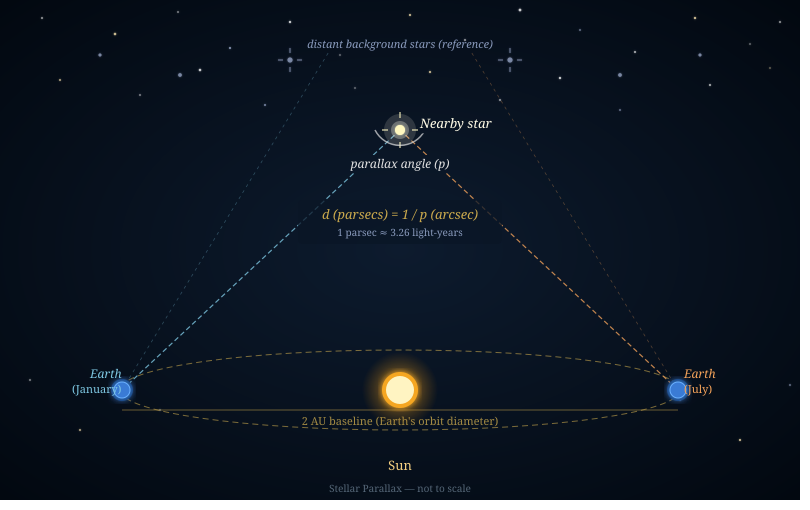

The Big Bang, while proving a definitive beginning of space-time, presents a problem for the Christian in requiring an aged universe of about 13.8 billion years. Scientists reason this age from the uniform cosmic microwave background (CMB), light visible from the most distant points of the universe, and the expanding rate at which galaxies spread apart from each other.
The Bible presents a straightforward creation of the universe, with fully developed planets and life, in six days. The Christian must begin with the premise that God gave the Scriptures as a divine revelation by inspiring the authors to infallibly communicate His message. God, as the source of all truth, cannot lie (Titus 1:2). The believer has a few options to reconcile the evidence with Scripture:
Day-Age Theory
The first solution, known as the Day-Age theory, is probably the most commonly found in liberal Christian and Catholic circles. It posits that day (yom) in Genesis 1 can denote a long undefined period of time. The lexical range of meaning does allow for this understanding, as when "day of the Lord" is used for the whole Tribulation (Zephaniah 1:14–15). Often proponents appeal to 2 Peter 3:8.
However, there is no example of a day used with numerical qualifiers (first, second, etc.) in a non-literal way (see Exodus 12:15, Leviticus 12:3). The Genesis account marks each day with a clear beginning and end using the "morning and evening" qualifiers. Furthermore, Exodus 20:11 uses the literal six day week of creation as the model for the Sabbath rest.
The Gap Theory
The Gap theory, or ruin-reconstruction theory, proposes an implied chronological gap between Genesis 1:1 and 1:2. Often proponents frame it as God creating a good and perfect world from the chaotic and evil remnants of His previous creation corrupted by Satan's fall. They would argue, God did not create the universe empty (Isaiah 45:18) and Scripture uses the same language elsewhere for judgment (Jeremiah 4:23, Exodus 10:21).
The gap concept hedges on a disjunctive waw somehow acting as a sequential verb in 1:2, rendering it as "And then the earth became formless and void." Most Hebrew grammarians understand it naturally as a circumstantial construction, not of consequence. Also, the gap translation would not fit most parallels even in the same context, such as Genesis 2:25 and 3:1.1
Finally, the gap theory seems to flatly contradict Hebrews 11:3. God created everything ex nihilo, or out of nothing. He did not simply reshape existing material. If there was a kind of creation before this creation, does that imply death and destruction before sin entered the world? It depends how the theory is presented. To avoid contradicting Romans 5:12, proponents would have to argue not for reconstitution but completely wiping the old creation and starting fresh — but that would eliminate any room for aged elements of this universe.
To be fair, the Gap theory was held by well-respected conservative preachers, like C. I. Scofield and J. Vernon McGee.
Light in Transit
Another solution to old earth evidence is to assume a "Mature Creation" model; that is, that God created, in many ways, the universe in an aged state. Of course, the concept has Biblical precedent. We know Jesus performed a miracle in creating aged wine (John 2:10). So then could God have created the cosmos themselves with apparent age? Readers can assume the first trees had rings and the soil was rich with nutrients that would otherwise take decades to develop. Henry Morris, founder of the Institute for Creation Research, best defended the mature creation theory as a general principle in geology.
However, the mature creation argument becomes strained when applied to starlight specifically. Genesis records light being created on Day One, before the sun, moon, and stars on Day Four. Proponents therefore conclude that light must have been created already in transit — traveling toward Earth with the appearance of having originated from sources that did not yet exist.
First of all, light photons must have travelled extraordinarily fast, from any source, to reach Earth by day six for humans to see. Scientists have always known light in a vacuum to be a universal constant. Cosmologists should be able to detect the energy of such an immensely fast burst of light.
Theologically, God would be orchestrating illusions as if He were giving a mere picture show of nonexistent realities. Using parallax trigonometry, astronomers can calculate stars that are well over 10,000 light years apart, meaning the light we receive to view them traveled millions, or even billions, of years to reach us. However, under a strictly young universe model, the visible events from such light (stellar explosions or galaxies forming) would never have actually occurred.2
You could nuance the theory by arguing light was created simply in all places at once as we currently observe it, removing the need for it to transit anywhere for any length of time. Yet, we can still observe very distant stars billions of lightyears away that become supernovae, exploding with an expanding wave of light energy. If light can behave dynamically over time (decay, travel, dissipate), then not all light is uniformly existing from Day One and the original problem remains.
Interestingly, light unsourced from stars does reappear in Revelation 21:23–25. Although, a divine light in a new, separate creation from our own doesn't help resolve the question at hand.

Time Dilation
Einstein's theory of general relativity holds that time passes slower in stronger gravitational fields. Dr. Russ Humphreys reasons that God could have "stretched out the heavens" (Isaiah 40:22) from a small compact state and then transitions to a white-hole (a hypothetical inverse black hole that stretches out space). Meanwhile, he explains the firmament of Genesis 1:6–8 as a massive shell of water that expands pushing the universe backwards into a ball-like cosmos. Thus, according to Einsteinian physics, time may be dilated near the center of the universe (assumed to be Earth) while operating much faster on the edges of it.3 Therefore, distant starlight had billions of years to travel to Earth — not in Earth's time, but in cosmic time.
Other creationists, like John Hartnett, have now come out with competing models of relativistic cosmology. At the moment, these complex theories of time altering events interest me the most and I would lean towards them giving us the most insight into God's design. They may not satisfy Christians seeking a simple answer, but why should we expect an infinitely complex God to have a straightforward (humanly speaking) process in creating everything? His understanding is beyond measure (Psalm 147:5).
As we continue to learn more about God's creation, new evidence may emerge to help build one coherent model. We will never have all the answers defined by science. Simply put: God worked a miracle in creating everything, as an evident display of His glory (Psalm 19:1–2).
- Charles Caldwell Ryrie, Basic Theology: A Popular Systemic Guide to Understanding Biblical Truth (Chicago, Ill: Moody Press, 1999), 209–10. ↩
- David H. Bailey, "How Are Distances to the Stars and Galaxies Calculated?" Science Meets Religion (blog), November 30, 2022, sciencemeetsreligion.org. ↩
- Don Batten et al., "How Can We See Distant Stars in a Young Universe?" in The Creation Answers Book, chap. 5 (Brisbane, Australia: Creation Ministries International, n.d.), creation.com. ↩